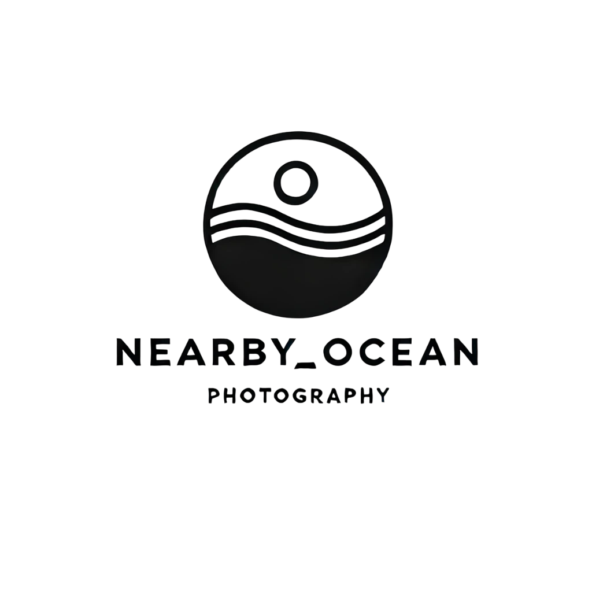

I am NEARBY_OCEAN, Taiwanese photographer.
Based in Kaohsiung, Taiwan
我相信，攝影不只是記錄光影的技藝，而是一種看見靈魂的方式。
對我來說，每一張照片，都是一次與世界對話的契機——有時安靜，有時真實，有時甚至殘酷地誠實。
我的創作動力來自內在的探尋，也來自與人交會時那一瞬間的共鳴。我特別關注那些「轉瞬即逝卻極具意義」的畫面——街角光影、一抹眼神、雨後濕地的靜謐……這些場景，其實是情緒與記憶的載體，是我作為觀者、也是參與者的角色交錯所在。
或許，我的相機不是在「拍攝」，而是在「理解」。理解一個人的樣子、一段關係的張力，或是一座城市的氣味。身為攝影師，我試圖不只是按下快門，更是在每一次創作中，找到自己與世界之間，最真實的頻率。
如果這些作品讓你暫停了一下，感受到些什麼，那麼我就知道，我與你，正在某個瞬間相遇了。
I believe photography is more than the craft of capturing light and shadow—it is a way of seeing the soul.
To me, every photograph is a chance to have a quiet conversation with the world—sometimes calm, sometimes raw, and sometimes brutally honest.
My creative drive comes from inner reflection as well as those fleeting moments of resonance when connecting with others. I am drawn to the scenes that vanish in an instant yet carry deep meaning—a corner of light on the street, a fleeting glance, the quiet after rain. These are not just images, but vessels of emotion and memory, where I exist both as an observer and a participant.
Perhaps my camera is not meant to "capture," but to "understand"—to understand the shape of a person, the tension of a relationship, or the scent of a city. As a photographer, I don't just press the shutter; I try, in every frame, to find the most honest frequency between myself and the world.
If any of these works made you pause—even just for a moment—and feel something, then I know we have already met, in that quiet space in between.